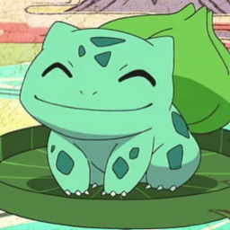

1- Bulbasaur
Tipo: Grama/Venenoso
É um Pokémon do tipo Grama/Veneno. Ele tem uma semente na sua costas que cresce e se desenvolve com ele. Bulbasaur é conhecido por ser um dos Pokémon mais populares e fácil de treinar.
É um Pokémon do tipo Fogo. Ele possui uma chama na ponta da sua cauda, que serve para indicar o seu estado de saúde. Charmander é conhecido por ser um Pokémon feroz e de personalidade forte.
É um Pokémon do tipo Água. Ele tem uma concha em suas costas que serve para se proteger de ataques. Squirtle é conhecido por ser um Pokémon amigável e fácil de treinar, além de ser um dos iniciais mais populares da primeira geração.
Eu sou a Keety, estudante de programação e treinadora pokémon. Gosto de pokémon do tipo Dark e do tipo fogo. Meu inicial favorito é o Charmander!